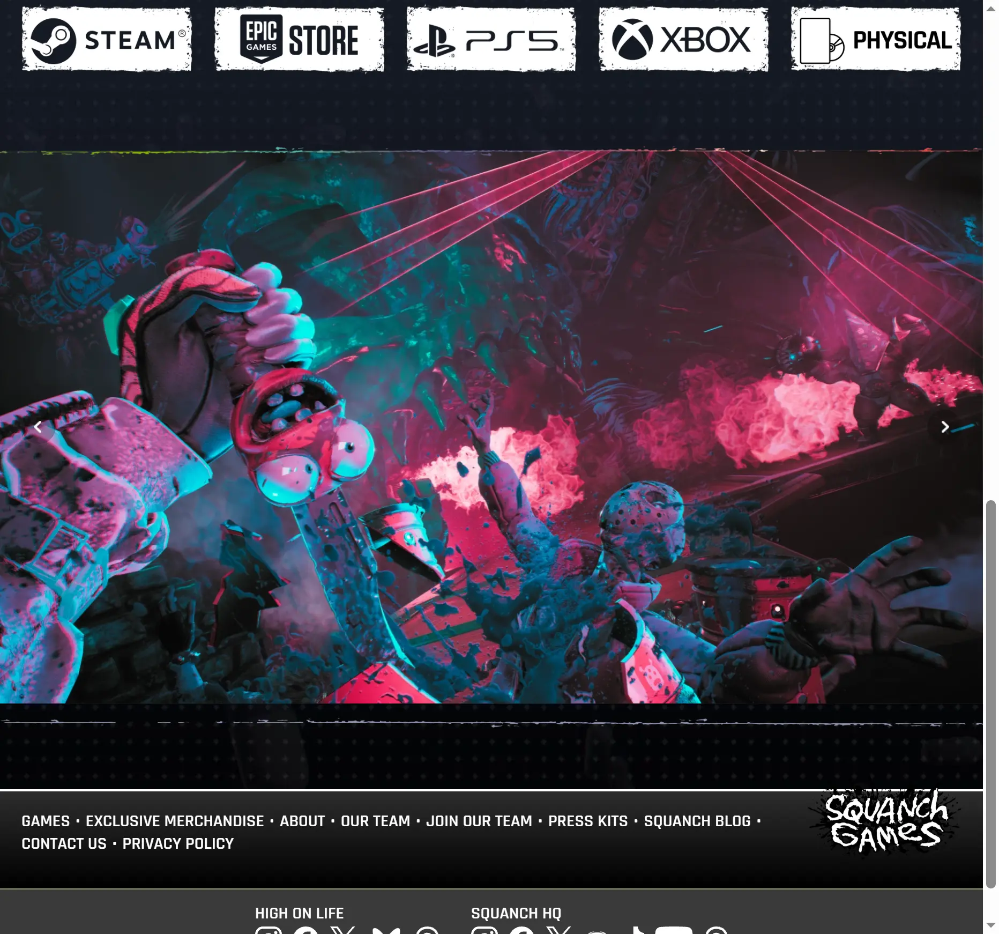
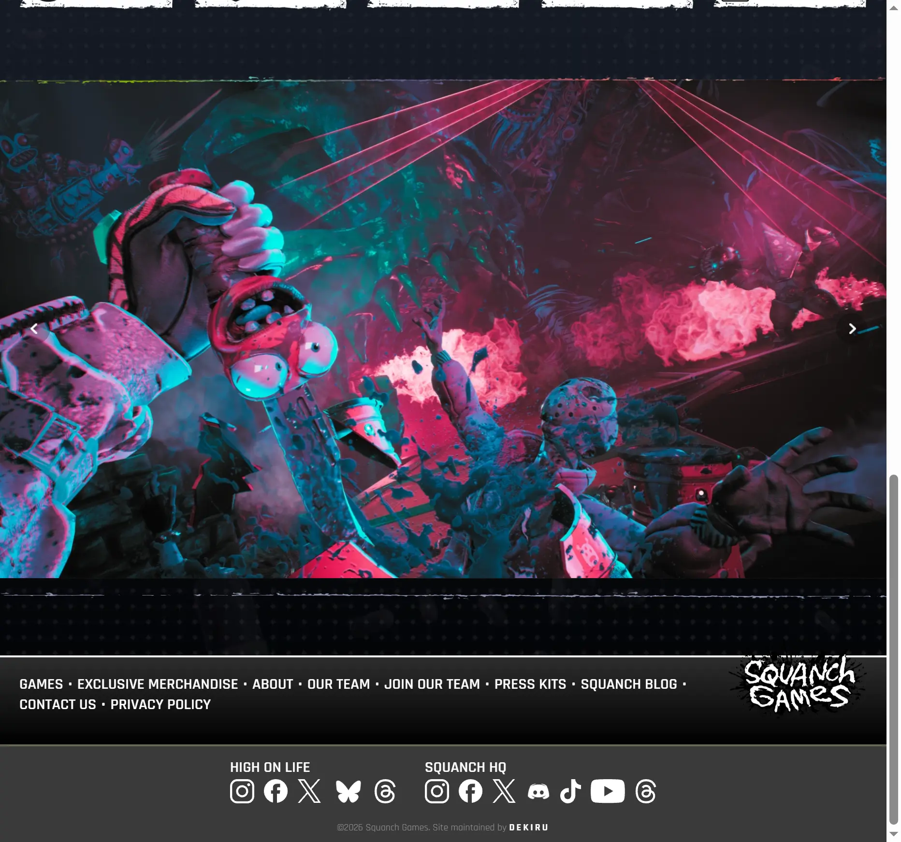

🤪
嗨皮人生2
Squanch Games · FPS
已发售
国际
买断制
PC
PS5
Xbox
2026.2
《嘿皮人生》续作，科幻喜剧 FPS，融合银河城战士的荒诞风格。
科幻喜剧 FPS
Squanch Games 制作
荒诞叙事
Game Pass 首日
🖼 官网截图
High on Life 2 - Squanch Games 官网 · 2026-04-14



📅 设计变化时间线
2026-02
全球发售
📋 玩家游戏体验清单
🧠
记忆点 Memory
›
会说话的武器系统回归并扩展——每把枪都有独立人格和吐槽台词
— IGN 评测
›
Metroidvania 探索结构比前作更成熟，隐藏区域和收集品密度翻倍
— GameSpot
›
贾斯汀·罗兰里克与莫蒂式幽默贯穿全程，过场动画质量提升明显
— Eurogamer
⚡
兴奋点 Excitement
›
新增双持武器组合系统——两把吐槽枪同时开火，对话还会互怼
— IGN
›
外星星球美术风格从卡通向赛博朋克+有机体方向扩展，视觉更有层次
— Digital Foundry
›
Game Pass 首日登录，首周下载量创 Squanch Games 新纪录
— 官方公告
🔥
痛点 Pain
›
部分玩家认为幽默尺度过于依赖屎尿屁梗，长时间游玩后疲劳
— Kotaku
›
战斗手感相比同期 FPS 仍偏松散，射击反馈力度不足
— GameSpot
›
PC 版发售初期存在帧数波动和内存泄漏问题
— Steam 社区
💨
流失点 Churn
›
主线12 小时通关后缺乏回放动力，无 NG+ 模式
— 多媒体综合
›
笑话密度在二周目几乎全部重复，幽默驱动的游戏缺乏复玩性
— Reddit 社区
🧠
记忆点 Memory
›
「会说话的枪」成为游戏最具辨识度标签——社区表情包产出极高
— Twitter / Reddit
›
系列被视为成人动画改编游戏的成功范例
— 多平台综合
⚡
兴奋点 Excitement
›
里克与莫蒂粉丝圈与游戏社区高度重叠，发售期社区活跃度爆发
— Reddit
›
武器台词的二创剪辑在 YouTube 和 TikTok 上大量传播
— YouTube / TikTok
🔥
痛点 Pain
›
部分核心 FPS 玩家认为射击玩法深度不够，把它归类为叙事冒险而非射击游戏
— Steam 评论
›
发售后Bug 修复节奏偏慢，社区反馈响应滞后
— Steam 社区
💨
流失点 Churn
›
Game Pass 效应——大量玩家首日下载、一周通关后卸载
— Game Pass 社区
›
无多人模式和赛季内容，长尾留存为零
— 多平台综合
📖 IP / 故事剧情
IP / STORY
📖 世界观与叙事
时间
架空科幻当代——外星人已公开接触地球，银河系赏金猎人文化盛行
发生地
多个外星星球——从前作的 Blim City 扩展到全新的暗黑星球和有机体世界
角色扮演什么
「赏金猎人」——手持会说话的外星枪械，在银河各处接取悬赏任务
科技水平
星际文明——拥有跨星球传送门、外星生物武器化技术、但日常生活像地球郊区
对抗关系
赏金猎人 vs 外星犯罪集团——反派是统治银河黑市的外星卡特尔，武器角色是前卡特尔科技的叛逃品
地图
银河城战士结构：以赏金猎人家为 Hub，通过传送门抵达各星球——每个星球是半开放区域，解锁能力后可回探
元素
成人动画 × 科幻 FPS × 银河城探索；美术标识为「外星卡通嘉年华」——用高饱和卡通渲染 + 有机体纹理重现里克与莫蒂式的荒诞异次元
🎨 玩家审美偏好
SCENE
🏞 赛博外星嘉年华 - 有机体+霓虹卡通宇宙
整体美术以高饱和卡通渲染为基底，叠加外星有机体纹理与霓虹灯管装饰；城镇场景充满弯曲的肉质建筑和发光广告牌——像里克与莫蒂的异次元被做成了 3D 可探索空间；2 代新增的暗色星球引入赛博朋克紫+生物磷光绿对比色调，视觉层次比前作更丰富；体积光和粒子特效在外星丛林场景中营造迷幻感
COSTUME
👘 外星卡通怪诞 x 成人动画角色设计
角色造型延续成人动画风格——大头、夸张表情、不规则身体比例；武器（Gatlians）每把都有拟人化的眼睛和嘴巴，从造型上就能看出性格；外星敌人用黏液、触手、发光器官等有机体特征区分种族；玩家角色「赏金猎人」造型走太空牛仔路线，头盔+宇航服+手套
UI
📱 涂鸦感 HUD - 手绘风格界面
HUD 和菜单系统大量使用手绘涂鸦线条和不规则形状，与卡通美术风格统一；血条和弹药信息用外星符号包裹，字体选用圆体/手写体增强轻松感；暂停菜单以外星人杂志形式呈现——翻页式交互、插画式背景；提示文字经常带武器角色的吐槽注释
SYMBOL
🔣 吐槽枪 x 外星黏液 x 彩虹传送门 x 赏金猎人头盔
核心视觉符号：会说话的枪械（系列IP标志）、外星黏液/有机体纹理（世界观材质语言）、彩虹色传送门（跨星球旅行的视觉锚点）、赏金猎人头盔（玩家身份标识）；色彩母题为高饱和暖色+霓虹冷光的嘉年华式配色
PROMO
📣 成人喜剧 x 外星冒险 - 让你笑着打完全程
宣发核心打幽默差异化——在清一色黑暗严肃的射击游戏中做喜剧 FPS；预告片全程让武器角色打破第四面墙对观众说话；Key Art 以主角+吐槽枪+外星怪物三角构图为主；Game Pass 首日策略配合社交媒体的表情包营销，短视频传播效率极高